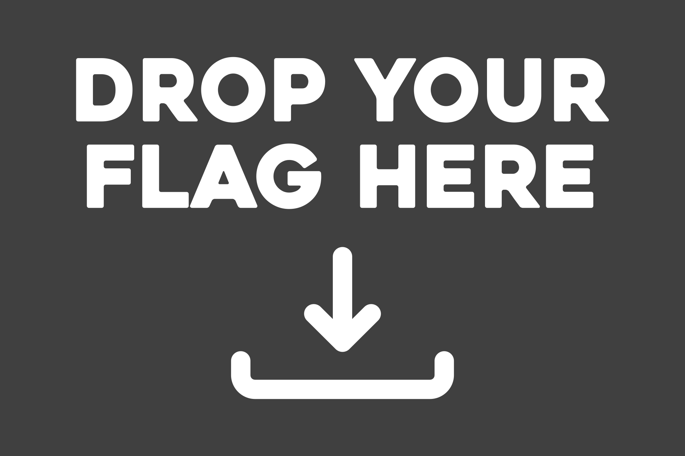

IdeoSorter is a political test website created entirely by myself (Quark), including a custom result maker and a tool to view all possible results. It is based on TheGhostOfInky's own site of the same name, which operates on a similar concept, but which i felt fell short in scope, efficiency and presentation. Knowing it would not be updated further, i went ahead and developed my own take on it. After nine years in development, hopefully it will have been worth the wait. I can be reached at beaulieu.renaud@gmail.com, and my favorite ideology is neocameralism.
While many tests prioritize covering as many ideologies as possible, down to the smallest detail, whereas others attempt to provide a quiz focused on a specific political group, IdeoSorter instead aims for generality and ease of comprehension. Rather than asking a plethora of advanced questions for hardened ideologists, it avoids all the math work and offers a predetermined result drawn from the path chosen by the user, as they select their stances on simple, broad topics. It is thus rather beginner-friendly, and intended as a means of discovering one's likely ideological affiliations, or to confirm them beyond doubt.
Perhaps you will wander around the website and notice that your preferred political label is absent. You go through the 106 available options, and the proposed result just isn't fitting enough, if at all. Prior to contacting me so that i implement it, consider the following guidelines:
If you believe you have found something that would meet all of the above criteria, you can open a GitHub issue explaining and justifying it, or do the same through email at my address (beaulieu.renaud@gmail.com), or contact me at one of my social media accounts found at the bottom of every page (realquark on Discord, @RenaudBeaulieuQ on X, ~worlyt-nillex on Tlon and u/QK_QUARK88 on Reddit).
Sure. All of it is open-source on GitHub for you to look at or simply copy-paste or download. You can even have a try at creating your own version of the test, but i can't guarantee that you will be able to understand how my programming works, or that people won't make fun of you for it (Potentially including me). Be aware that the entirety of the project's iterations are under the GNU General Public License, meaning that you can copy, distribute and edit any of its parts at will, but you are strictly forbidden from making people pay to use it afterwards, or prevent them from accessing your source code openly and freely. My generosity comes at the cost of yours.
Go ahead and contact me at the places i have linked. It can be for partnerships, general propositions, clarifications, whatever. I'm nowhere near open-minded or welcoming, but i can recognize a good idea when i see one.